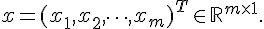
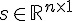
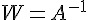
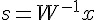

R 統計軟體: 講題分享-獨立成份分析-(作者：Taiwan R User Group)
大家好，我們是Taiwan R User Group。除了平常在網路上交流R 相關的資訊之外，我們也於每週一晚上7:30在政治大學公企中心舉辦MLDM (Machine Learning and Data) Mining Monday！提供一個平台讓相關領域的朋友能分享資料分析的心得，或是使用R 的故事。
在篇文章中，我們將和讀者分享本月份某次 MLDM Monday的 主題：獨立成份分析(Independent Component Analysis)
簡介
獨立成份分析主要是用在分辨混在一起的訊號。舉例來說，如果我們用數個麥克風收音，而音訊來源混雜著各種聲音源，如：主持人的演講、周遭的背景音樂和外面街道上的喧譁。透過獨立成份分析，我們就可以把演講和背景音樂給分開。
數學定義
假設有一個可以觀測的訊號，是一個長度的隨機向量(random vector):
- 
這個隨機向量中混雜了k 個訊號源，以及一個雜訊：

其中:
-  是訊號源
 是訊號源混雜的比率
是訊號源混雜的比率 是雜訊，通常會假設為高斯分佈(Gaussian noise)，且期望值為0。
是雜訊，通常會假設為高斯分佈(Gaussian noise)，且期望值為0。
如果我們猜的到 A ，那就能夠計算出  ，並利用  以還原乾淨的訊號源了。
上述的定義可以擴充為若干個觀測訊號以及若干個訊號源。
範例
假設看不到的訊號源是長這個樣子：

經過某個的混雜後，我們觀測到3個訊號：

而獨立成份分析的目的，則是要還原出原本的訊號：
這樣大家有沒有比較了解獨立成份分析所要解決的問題呢？
其他還有許多更細節的數學性質，限於篇幅我們就不仔細介紹了。請大家有興趣可以參考影片
利用 R 來做獨立成份分析
首先我們先到
在影片中，講者勾選了第6、7和9的音訊。在下載混合後的3個音訊檔案後，讀者就跟著我們來把音訊還原。
載入套件
我們要先安裝和載入下列這3個套件！
library(fastICA)
library(tuneR)
library(seewave)載入聲音
接著我們利用readWave指令匯入聲音，並且將3個聲音檔案整合到origin這個大矩陣中！ 註解掉的listen指令可以播放匯入的聲音。
rm(list = ls())
setwd("放置下載的聲音檔的目錄")
origin = matrix(0, nrow = 50000, ncol = 3)
for (i in 1:3) {
filename = paste("000001101mix", as.character(i), ".wav", sep = "")
data = readWave(filename)
# listen(data)
origin[, i] = data@left
}獨立成份分析
最後我們使用 fastICA 指令將混合的聲音還原為原本的聲音。 讀者可以使用註解掉的 listen 指令來聽聽看還原後的效果喔！
ica_result = fastICA(origin, n.comp = 3)
ica_source = ica_result$S
for (i in 1:3) {
temp = ica_source[, i]
temp = round((temp - min(temp))/(max(temp) - min(temp)) * max(origin) +
min(origin))
temp = Wave(left = temp, samp.rate = 8000, bit = 8)
# listen(temp)
writeWave(temp, paste("source", as.character(i), ".wav", sep = ""))
}小結
看起來利用 R 做獨立成份分析並不會太困難耶。不過根據講者的介紹，fastICA並沒有辦法從3個觀測訊號還原成超過3個的訊號源。
所以未來讀者若是有類似訊號的資料，可以先對資料做獨立成份分析後，再繼續分析囉。我自己則是想嘗試利用這個技術來自製卡拉ok伴唱帶，希望能成功啦，哈哈！
最後再次謝謝講者 Ben 的分享。